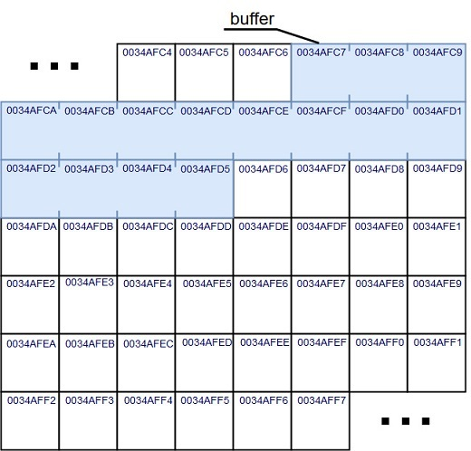
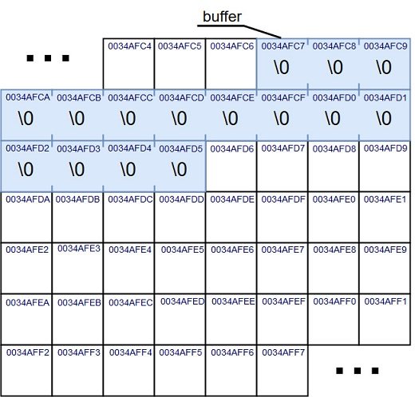
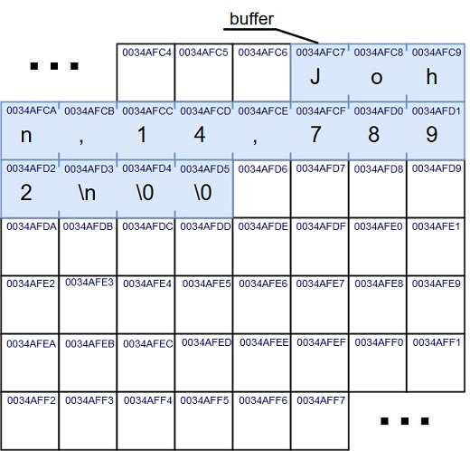
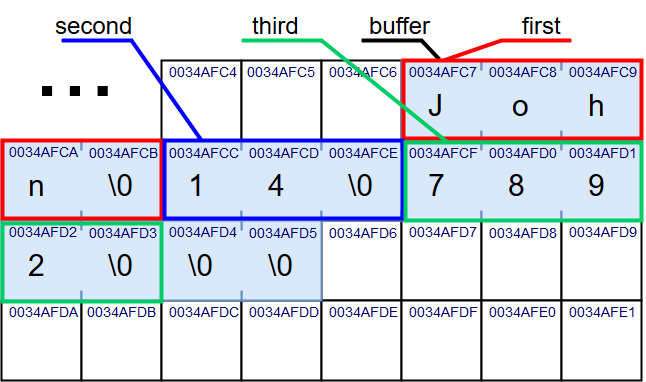
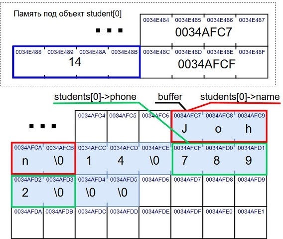
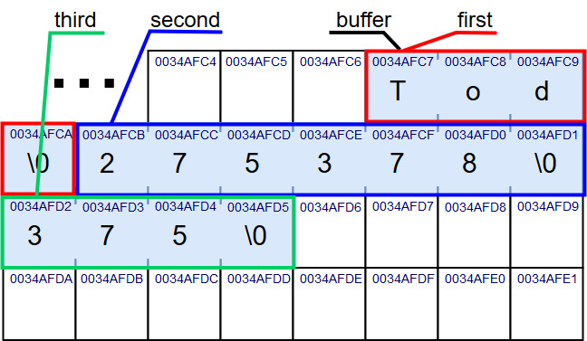
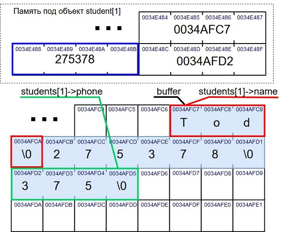

Основы алгоритмизации и программирования
Cтруктуры данных
Содержание лекции
Пользовательские типы данных
Стандартные типы данных
До этого моменты мы пользователись лишь простыми фундаментальными типами данных:
bool, char, short, int, float, double и т.д.
В сложных системах использование только стандартных типов приводит к разрастанию и запутыванию кода, стандартные типы не обладают достаточной информативностью.
Нестандартные типы данных
- Псевдонимы (typedef)
- Структуры (struct)
- Классы (class)
- Объединения (union)
- Перечисления (enum)
- Битовые поля (bit field)
Описание нестандартных типов
Нестандартные пользовательские типы необходимо описывать перед использованием, как функции.
Обычно это делают в заголовочных файлах, или перед функцией main.
Псевдонимы
Псевдонимы используются для создания альтернативных имён к другим типам данных.
Опредеяются с помощью ключевого слова typedef:
typedef новое_имя тип_данных;
Например:
typedef unsigned long double ULD;
typedef int * poINTer;
typedef char INT8;
typedef short int INT16;
typedef int INT32;
typedef long int INT64;
Дикий пример
#define PRECISION 1e-4
typedef short int length;
typedef short int index;
typedef long double L2;
typedef long double* PL2;
int main()
{
setlocale(LC_CTYPE, "Russian");
length n_user, n_10 = 10;
while (true)
{
cout << endl << "Введите размер массива, или -1 для выхода: ";
cin >> n_user;
if (n_user < 0)
{
cout << "Завершение." << endl;
break;
}
srand(time(0));
PL2 arr_user = new L2[n_user];
PL2 arr_10 = new L2[n_10]{ 0.0 };
L2 sum = 0.0;
for (index i = 0; i < n_user; ++i)
{
arr_user[i] = rand() % 10;
sum += arr_user[i];
cout << arr_user[i] << " ";
}
cout << "= " << sum << endl;
float ratio = (float)n_user / n_10;
float prev_part = 0.0;
for (index i = 0, j = 0; i < n_10; ++i)
{
float cur_r = ratio;
if (prev_part > cur_r)
{
arr_10[i] += arr_user[j] * cur_r;
prev_part -= cur_r;
cur_r = 0.0;
if (prev_part == 0.0)
{
++j;
}
}
else if (prev_part > PRECISION)
{
arr_10[i] += arr_user[j] * prev_part;
cur_r -= prev_part;
prev_part = 0.0;
++j;
}
while (cur_r >= 1.0)
{
arr_10[i] += arr_user[j];
++j;
--cur_r;
}
if (cur_r > PRECISION)
{
arr_10[i] += arr_user[j] * cur_r;
prev_part = 1.0 - cur_r;
}
}
sum = 0.0;
for (index i = 0; i < n_10; ++i)
{
sum += arr_10[i];
cout << arr_10[i] << " ";
}
cout << "= " << sum << endl;
}
}
Структуры struct
Структуры - это типы данных, определённые программистом в коде, состоящие из комбинаций стандартных типов данных (или других пользовательских).
Пользовательские типы нужны для внесения предметной области в текст программы, и построения уровня абстракции над числовыми значениями.
Простейший пример, если вы пишете программу, которая должна работать с трёхмерной графикой. Во всех вычислениях и операциях у вас должны фигурировать координаты.
Вместо того, чтобы везде писать так:
int ax;
int ay;
int az;
int bx;
int by;
int bz;
Гораздо лаконичнее и понятнее будет:
Point A;
Point B;
Если ваша программа использует математические вектора и связанные с ними вычисления.
Вместо такого описания функции скалярного произведения
int vec_sum(int v1_x, int v1_y, int v2_x, int v2_y)
{
int scal = v1_x * v2_x + v1_y * v2_y;
return scal;
}
Достаточно было бы написать вот так:
int vec_sum(Vector v1, Vector v2)
{
int scal = v1 * v2;
return scal;
}
А что если взять функцию вектороного произведения векторов?
Если хранить вектора как 2 чисал, то что делать, когда в результате функции нужно вернуть вектор? 2 int-а сразу не вернешь, придётся добавлять параметры-указатели.
void vec_mult(int v1_x, int v1_y, int v2_x, int v2_y, int* vres_x, int* vres_y)
{
*vres_x = v1_x * v2_y;
*vres_y = v1_y * v2_x;
}
Добавив же пользовательский тип данных:
Vector* vec_mult(Vector a, Vector b)
{
Vector* res = a * b;
return res;
}
Или если бы мы писали систему, например, для контроля качества на производстве холодильников.
Огромное число характеристик холодильника можно было бы не прописывать целым зоопарком переменных:
char* construction_type = "Sized with freezer";
char* model = "Samsung RL52TEBSL1/BWT";
int color = 0x0313FD;
int power_usage = 315;
float freezing_pow = 14.4;
short min_t = -24;
А описать всего одним объектом:
Fridge_propertys samsungRL52T;
Описание структуры
Описание структуры имеет следующий синтаксис:
struct название_типа
{
тип имя1;
тип имя2;
// ...
тип имяN;
};
название_типа имя;
Например:
struct Point
{
int x;
int y;
};
Point A;
Point B;
Использование объектов
Переменные, из которых состоят структуры, называют полями этой структуры.
Переменные типа пользовательских структур обычно называют объектами.
Работать с ними можно как с обычными типами данных: создавать статически и динамически, делать из них массивы, использовать с указателями.
Размер структур
Количество байт, занимаемое объектом структуры в памяти, расчитывается как сумма размеров всех его полей.
Значит, для примера со структурой Point, состоящей из двух int-ов, её размер будет тождественен 8 байтам.
Элементы структуры, также как и элементы массивов, располагаются в памяти последовательно друг за другом.
Пример использования
struct PassportInfo
{
short series;
char* number;
char* name;
char* id;
char* authority;
};
PassportInfo pass1; // Объект структуры PassportInfo по имени pass1
PassportInfo* ptrPas = new PassportInfo;
PassportInfo arrOfPass[24];
// Функция принимает два объекта структуры PassportInfo
// и возвращает указатель на объект структуры PassportInfo
PassportInfo* functionName(PassportInfo pi1, PassportInfo pi2);
Еще одна структура
В паспорте также должна содержаться информация о дате выдаче и сроке действия. Не будем же мы задавать одну логическую сущность 3 полями (год, месяц, день)? Нужно создать еще одну структуру.
struct Date
{
int year;
int month;
int day;
};
Вложенные структуры
Тогда можно дополнить предыдущий пример:
struct PassportInfo
{
short series;
char* number;
char* name;
char* id;
char* authority;
Date issue; // Объекты одной структуры в качестве полей другой структуры
Date validity;
};
Ещё один пример
Допустим, в вашей программе должна храниться информация о студентах из вашей группы. Допустим, их 20 человек. Для каждого студента должна иметься информация о его имени, идентификаторе зачетки и телефонному номеру.
Вас бы устроил такой код?
char* st1_name;
long st1_record;
char* st1_phone;
char* st2_name;
long st2_record;
char* st2_phone;
char* st3_name;
long st3_record;
char* st3_phone;
char* st4_name;
long st4_record;
char* st4_phone;
char* st5_name;
long st5_record;
char* st5_phone;
char* st6_name;
long st6_record;
char* st6_phone;
char* st7_name;
long st7_record;
char* st7_phone;
char* st8_name;
long st8_record;
char* st8_phone;
char* st9_name;
long st9_record;
char* st9_phone;
char* st10_name;
long st10_record;
char* st10_phone;
char* st11_name;
long st11_record;
char* st11_phone;
char* st12_name;
long st12_record;
char* st12_phone;
char* st13_name;
long st13_record;
char* st13_phone;
char* st14_name;
long st14_record;
char* st14_phone;
char* st15_name;
long st15_record;
char* st15_phone;
char* st16_name;
long st16_record;
char* st16_phone;
char* st17_name;
long st17_record;
char* st17_phone;
char* st18_name;
long st18_record;
char* st18_phone;
char* st19_name;
long st19_record;
char* st19_phone;
char* st20_name;
long st20_record;
char* st20_phone;
Добавить массивы
char** st_names;
long* st_records;
char** st_phones;
Выглядит уже неплохо.
Но. Значения имени, зачётки и телефона студента должны быть логически неразрывно связаны друг с другом. А у нас они являются совершенно разными переменными.
Разбавить структурами
struct StudentData
{
char* name;
long record;
char* phone;
};
StudentData* students;
Теперь всё красиво. И со стороны логики, и со стороны внешнего вида.
Вскрытие показало..
Имея объект структуры, мы можем работать со всеми его полями.
Для обращения ко внутреннему содержимому объявленного статически объекта используется оператор . (точка):
Point A;
A.x = 15;
A.y = -2;
cout << A.x << " " << A.y << endl;
Для обращения ко внутреннему содержимому объекта через указатель используется оператор -> (стрелка):
Point* B = new Point;
B->x = 15;
B->y = -2;
cout << B->x << " " << B->y << endl;
Пример со студентами
StudentData student1;
student1.name = "John Doe";
student1.record = 423478123;
student1.phone = "+375 (88) 987-65-43"
StudentData* student2 = new StudentData;
student2->name = "John Smith";
student2->record = 478234234;
student2->phone = "+375 (77) 123-45-67";
В поисках Немо
int number_of_stud = 19;
const char* sought = "Nemo";
StudentData* students = new StudentData[n];
// ...
for (int i = 0; i < number_of_stud; ++i)
{
char* find = strstr(students[i].name, sought);
if (find != nullptr && find == studentd[i].name)
{
cout << sought << "найден!" << endl
<< "\t" << students[i].name << endl
<< "Вы можете позвонить ему по номеру: " << students[i].phone << endl;
}
}
delete[] students;
Считываем данные из файла
struct StudentData
{
char* name;
long record;
char* phone;
};
int main()
{
setlocale(LC_CTYPE, "Russian");
const int max_stud_number = 30;
FILE* file = fopen("student_list.txt", "r");
if (file == nullptr)
{
printf("Be careful. File not exist.");
exit(-1);
}
StudentData** students = new StudentData*[max_stud_number] { nullptr };
int stud_index = 0;
const int max_length = 200;
char* buffer = new char[max_length];
while (!feof(file))
{
memset(buffer, 0, max_length);
fgets(buffer, max_length, file);
char* first = strtok(buffer, ",\n");
char* second = strtok(nullptr, ",\n");
char* third = strtok(nullptr, "\n");
if (first != nullptr && second != nullptr && third != nullptr)
{
students[stud_index] = new StudentData;
students[stud_index]->name = first;
long record = atol(second);
students[stud_index]->record = record;
students[stud_index]->phone = third;
++stud_index;
}
}
fclose(file);
delete[] students;
}
В этом коде есть ошибка, найдите её. В итоговом массиве студентов поля name и phone всех объектов будут равны "", а record будет правильный.
buffer = new char[15]
Для упрощения, примем размер buffer равным 15. Он создаётся перед циклом.
buffer = new char[15]
И в начале каждой операции обнуляется с помощью вызова функции memset:
fgets(buffer, 15, file)
Затем в buffer считывается очередная строка из файла.
strtok(buffer, ",\n")
Функция strtok разбивает buffer на три строки, и возвращает указатели на начало каждой из них.
char* first = strtok(buffer, ",\n"); // Указатель на адрес 0034AFC7
char* second = strtok(nullptr, ",\n"); // Указатель на адрес 0034AFCC
char* third = strtok(nullptr, "\n"); // Указатель на адрес 0034AFCF

Сохранение адреса
students[stud_index]->name = first; // В name записали адрес 0034AFC7
long record = atol(second); // Создали переменную record = 14
students[stud_index]->record = record; // В record записали число 14
students[stud_index]->phone = third; // В phone записали адрес 0034AFCF

И так далее
На следующей итерации buffer обнулится, и всё начнётся по-новому. Функция strtok вернёт указатели на ту же память, на память в buffer.
Те же адреса
students[stud_index]->name = first; // В name записали адрес 0034AFC7
long record = atol(second); // Создали переменную record = 275378
students[stud_index]->record = record; // В record записали число 275378
students[stud_index]->phone = third; // В phone записали адрес 0034AFD2

Итог
В конце концов в каждом объекте students указатели name и phone будут содержать адреса ячеек памяти buffer. Который, в свою очередь, будет полностью обнулён на последней итерации цикла. Соответственно, любой указатель на память buffer-а будет показывать пустую строку.
Рекурсивные структуры
Структура может содеражать указатель на объект такой же структуры:
struct Element
{
char* name;
int value;
Element* next;
};
Это свойство позволяет создавать по-настоящему динамические структуры данных с переменным числом элементов.
Перечисления enum
Перечисления - это набор именованных целочисленных констант.
Перечисления используются для повышения наглядности программы и создания дополнительного уровня абстракции над числами в определённом контексте программного кода.
Объявляются перечисления при помощь ключевого слова enum:
enum Enum_name
{
name1,
name2,
// ...
nameN
};
Объекты перечисления
Можно создать объект перечисления. Такому объекту возможно присвоить только одно из перечисленных в нём значений.
enum Languages
{
C,
Java,
Ada,
Lisp,
Python,
Haskell
};
Language Lang_to_use;
Lang_to_use = Lisp;
Lang_to_use = Haskell;
Целочисленная интерпретация
По сути, объект перечисления хранит в себе один int. Из этого следует, что объект любого перечисления занимает в памяти 4 байта.
А каждое из возможных значений перечисления, фактически, является глобальной константой типа int. Значения для этих констант присваиваются неявно от 0 и по возрастанию;
enum KEYBOARD_KEYS
{
ENTER, // Неявно const int Enter = 0
TAB, // const int Tab = 1
SHIFT, // const int Shift = 2
CONTROL, // const int Control = 3
ALT, // const int Alt = 4
BACKSPACE // const int Backspce = 5
};
Явное назначение
Можно также присваивать значения элементам перечисления и самостоятельно:
enum Units
{
Bits = 1,
Bytes = 8,
KB = 1000;
MB = 1000000;
};
Перечисления и числа
С объектами перечисления можно работать как с обыкновенными числами.
Как правило, перечисления используются в сравнениях, для того чтобы придать им большую осмысленность и выразительность.
Пример
Пусть стоит задача реализовать функции для работы с какими-нибудь бинарными документами. Вы пишете функцию для открытия документа, у которого должно быть 3 режима: чтение, запись или чтение и запись.
Можно сделать это так:
bool open_document(char* name, char* security_token, int open_mode);
open_document("docs.dts", "z7fsjf73jhmc011ncd8sjf", 3);
open_document("private.dts", "z7fsjf73jhmc011ncd8sjf", 1);
Где при передаче в open_mode единицы будет подразумеваться режим только для чтения, при передаче 2 режим только для записи, 3 - режим для чтения и записи.
Продолжение
А лучше сделать так:
enum OPEN_MODE
{
READ_ONLY = 1,
WRITE_ONLY = 2,
READ_WRITE = 3
};
bool open_document(char* name, char* security_token, OPEN_MODE mode);
open_document("docs.dts", "z7fsjf73jhmc011ncd8sjf", READ_WRITE);
open_document("private.dts", "z7fsjf73jhmc011ncd8sjf", READ_ONLY);
Еще один пример
Вместо того, чтобы писать вот так, с непонятными числами:
bool draw_circle(unsigned int radius, int color, unsigned short thickness)
{
bool ret_val = false;
if (color != 0)
{
Brush* brush = prepare_brush(thickness);
if (brush != nullptr)
{
brush->line = radius;
DC* context = nullptr;
switch (color)
{
case 1:
DC = make_from_cache(brush);
break;
case 2:
DC = get_inverse_std();
break;
case 3:
DC = brush->extract_R();
DC->confirm();
case 4:
DC = brush->extract_G();
DC->confirm();
break;
case 5:
DC = brush->extract_B();
DC->confirm();
break;
default:
DC = get_std();
color = 1;
break;
}
ret_val = paint(brush, color);
}
}
else
{
ret_val = create_stub(radius, thickness);
}
return ret_val;
}
Например:
Можно написать вот так:
enum COLORS
{
NO_COLOR = 0,
BLACK,
WHITE,
RED,
GREEN,
BLUE
};
bool draw_circle(unsigned int radius, COLORS color, unsigned short thickness)
{
bool ret_val = false;
if (color != NO_COLOR)
{
Brush* brush = prepare_brush(thickness);
if (brush != nullptr)
{
brush->line = radius;
DC* context = nullptr;
switch (color)
{
case BLACK:
DC = make_from_cache(brush);
break;
case WHITE:
DC = get_inverse_std();
break;
case RED:
DC = brush->extract_R();
DC->confirm();
case GREEN:
DC = brush->extract_G();
DC->confirm();
break;
case BLUE:
DC = brush->extract_B();
DC->confirm();
break;
default:
DC = get_std();
color = BLACK;
break;
}
ret_val = paint(brush, color);
}
}
else
{
ret_val = create_stub(radius, thickness);
}
return ret_val;
}
Объединения union
Объединение - это тип данных, который в разные моменты времени может выступать в роли различных типов данных.
Объединения описываются также как и структуры, только вместо слова struct используется ключевое слово union.
union Base
{
int i;
float f;
};
Структуры vs объединения
Если структуру можно ассоциировать с союзом И, то объединения - с союзом ИЛИ.
Внутри структуры одновременно находятся И i, И f, И pchar.
struct A
{
int i;
double d;
char* pchar;
};
Внутри объединения одновременно находятся ИЛИ i, ИЛИ f, ИЛИ pchar.
union B
{
int i;
double d;
char* pchar;
};
Объединения в памяти
Объединения занимают в памяти объём, необходимый для хранения наибольшего из своих полей.
Для предыдущего примера, размер структуры A будет составлять 16 байт.
А объединения B - 8 байт.
Активное поле
Активным полем в объединении является то поле, в которое последним было присвоено значение.
И у n.index, и у n.name, и у n.delta один и тот же адрес в памяти.
union Bucket
{
int index;
char* name;
float delta;
};
int main()
{
Bucket n;
// Активное поле delta
n.delta = 13.46f;
float f = n.delta * 3.14159f;
// Теперь активным становится поле index
for (n.index = 0; n.index < 10; ++n.index)
{
cout << n.index << endl;
}
// Активное поле index
n.name = new char[20];
scanf_s("%s", n.name, 20);
printf("%s\n", n.name);
return 0;
}
Использование
Обычно, объединения применяются для оптимизации работы с памятью, чтобы экономнее распоряжаться её объемом.
Также бывают ситуации, когда специфика функционирования объединений логично вписывается в разрабатываемое решение.
Битовые поля
Динамические структуры
Динамические структуры данных - это структуры данных, память под которые выделяется и освобождается по мере необходимости.
Динамические структуры характеризуются отсутствием физической смежности элементов структуры в памяти, непостоянством и непредсказуемостью размера (числа элементов) структуры в процессе ее обработки.
Классификация динамических структур данных
- Стек
- Очередь
- Дек
- Списки: односвязные, двусвязные, циклические
- Деревья
Элемент динамической структуры
Каждый элемент динамической структуры представляет собой запись, содержащую, как минимум, два поля: данные и указатель.
- В поле данных хранится значение текущего элемента структуры
- В поле указателя содержится один или несколько указателей, связывающих данный элемент с другими элементами структуры
Объявление элемента
Объявление элемента динамической структуры данных выглядит следующим образом:
struct имя_типа {
информационное_поле;
адресное_поле;
};
Например:
struct TNode {
int Data; // целочисленные данные
TNode *Next; // адресное поле
};
Пример структуры
Рассмотрим в качестве примера следующую динамическую структуру:

Понятие стека
Стеком называется одномерная структура данных, загрузка или увеличение элементов для которой осуществляется с помощью указателя стека в соответствии с правилом LIFO ("last-in, first-out" "последним введен, первым выведен"), т.е. включение и исключение элементов производится только с одного конца.
Проще говоря

Положить или снять книгу можно только на вершине стопки
Операции над стеком
Переменная, которая указывает на последний элемент последовательности в вершине стека - указатель стека.
Для стека определены две базовые операции:
- PUSH - добавление нового элемента на вершину стека
- POP - удаление элемента из вершины стека

Пример работы стека

Организация целочисленного стека
Рассмотрим пример организации полустатического стека через обыкновенный массив
#define SIZE 100 // Максимальный размер
int Stack[SIZE]; // Массив для хранения стека
int SP; // Указатель стека
void Init() // Функция очистки стека
{
SP = -1; // Стек пуст
}
void Push(int val) // Запись в стек
{
SP++; // Указатель к следующему
Stack[SP] = val; // Запись по указателю стека
}
int Pop() // Исключение из стека
{
if (SP < 0)
return 0; // Стек пуст
return (Stack[SP--]); // Вернуть элемент по указателю и уменьшить указатель
}
Очередь

Понятие очереди
Очередь - одномерная структура данных, для которой загрузка или извлечение элементов осуществляется с помощью указателей начала извлечения (head) и конца (tail) очереди в соответствии с правилом FIFO ("first-in, first-out" - "первым введен, первым выведен"), другими словами включение производится с одного, а исключение – с другого конца.
Операции над очередью
У очереди имеется два указателя - указатель на начало очереди (start) и указатель на конец очереди (end).
Для очереди определены такие же операции как и для стека - PUSH и POP, но со своими особенностями.
- PUSH - добавление нового элемента в конец очереди
- POP - удаление элемента из начала очереди

Пример работы очереди

Очереди с приоритетом
В реальных задачах иногда возникает необходимость в формировании очередей, где порядок выборки элементов определяется приоритетами элементов.
Приоритет в общем случае может быть представлен числовым значением, которое вычисляется либо на основании значений каких-либо полей элемента, либо на основании внешних факторов.
Так, и FIFO, и LIFO-очереди могут трактоваться как приоритетные очереди, в которых приоритет элемента зависит от времени его включения в очередь.
Понятие приоритетной очереди
Приоритетная очередь — это абстрактный тип данных, предназначенный для представления взвешенных множеств. Множество называется взвешенным, если каждому его элементу однозначно соответствует число, называемое ключом или весом. При выборке элемента всякий раз выбирается элемент с наибольшим приоритетом., т.е. "первым включается - с высшим приоритетом исключается".
Понятие дека
Дек - особый вид очереди. Дек (от англ. deq - double ended queue,т.е очередь с двумя концами) - это такой составной тип данных, в котором как включение, так и исключение элементов может осуществляться с любого из двух концов списка.
Операции над деком
Структура дека поддерживает следующие операции:
- PUSH - добавление нового элемента на вершину дека
- POP - удаление элемента на вершине дека
- PUSH_BACK - добавление нового элемента в конец дека
- POP_BACK - удаление элемента с конца дека

Списки

Понятие списка
Список представляет собой линейную последовательность переменных, каждая из которых связана указателями со своими соседями.Списки бывают следующих видов:
- Односвязные
- Двусвязные
- Циклические
Свойства списков
Список - как массив, только неограниченного размера и без последовательного размещения элементов в памяти.
Последовательность обхода списка зависит не от физического размещения элементов списка в памяти, а от последовательности их связывания указателями. Точно так же определяется нумерация элементов списка - логический номер элемента в списке - это номер, получаемый им в процессе движения по списку.
Односвязные списки
Односвязные списки являются наиболее простыми. Основным их недостатком является возможность просмотра только в одном направлении - от начала к концу. Для односвязного списка наиболее простыми являются операции включения и исключения элементов в начале и конце списка, соответственно они используются для моделирования таких структур данных, как стеки и очереди.

Двусвязные списки
Двусвязные списки дают возможность просмотра элементов в обоих направлениях и являются наиболее универсальными. Операции включения и исключения элементов в различные части такого списка имеют примерно одинаковый уровень сложности. Двусвязные списки используются для создания цепочек элементов, которые допускают частые операции включения, исключения, упорядочения, замены и пр..

Циклические списки
В односвязных и двусвязных списках последний элемент содержит указатель NULL для обозначения факта окончания последовательности. Аналогично первый элемент двусвязного списка содержит указатель NULL на предыдущий элемент. В качестве альтернативы может быть предложен циклический список, у которого последний элемент ссылается на первый, а первый - на последний.

Работа со списками
struct list
{
list* next;
int val;
} *ph; // Указатель на начало списка
list *p;
p = ph; // Текущий указатель - на первый
p->next ... // Указатель на следующий элемент
p = p->next // Переход к следующему элементу
p != NULL ... // Проверка на конец списка
p->next == NULL // Проверка на последний элемент
for( p = ph; p != NULL; p = p->next) // Обход списка
Слияние двух списков
Операция слияния заключается в формировании из двух списков одного - она аналогична операции сцепления строк.
Последний элемент первого списка содержит пустой указатель на следующий элемент, этот указатель служит признаком конца списка. Вместо этого пустого указатель в последний элемент первого списка заносится указатель на начало второго списка. Таким образом, второй список становится продолжением первого.
STL
Все сложные структуры данных уже реализованы в Стандартной библиотеке шаблонов C++ (STL)

Содержание STL
Сложные структуры данных принято называть коллекциями. STL содержит подборку классов коллекций для различных целей, а также поддерживает ряд алгоритмов для работы с этими коллекциями.Библиотека содержит пять видов компонентов:
- Алгоритм (algorithm)
- Контейнер (container)
- Итератор (iterator)
- Функциональный объект (function object)
- Адаптер (adapter)
Контейнеры STL
В библиотеке STL реализованы следующие контейнеры:
- <stack> - стек
- <queue> - очередь
- <deque> - дек
- <list> - двусвязный список
- <vector> - динамический массив
- <map> - ассоциативный массив
- <set> - множество
- <bitset> - битовый массив
Подключение библиотек
Для использования какого-либо контейнера необходимо подключить его библиотеку через команду include
#include <stack>
#include <queue>
#include <deque>
#include <list>
#include <vector>
Шаблоны
Все основные контейнеры библиотеки STL являются классами шаблонов. Это значит, что для описания контейнера должен явно определяться тип его элементов:
контейнер<тип_элементов> идентификатор;
Например:
stack<int> st1;
queue<double> qu1;
vector<string> vc1;
struct {
int id;
double mass;
double charge;
short float spin;
} corpuscle;
list<corpuscle> li1;
Работа со стеком
Основные операции в классе stack:
- push
- pop
- top
- empty
- size
stack: push
Стандартная операция для стека - добавление элемента на вершину.
void std::stack.push(const типа &Val);
Пример:
stack<int> s;
s.push(123); // s: 123
s.push(-3578); // s: 123, -3578
stack: pop
Вторая стандартная операция для стека - удаление элемента с вершины стека.
void std::stack.pop();
Пример:
stack<int> s;
s.push(123); // s: 123
s.push(-3578); // s: 123, -3578
s.pop(); // s: 123
s.pop(); // s:
stack: top
Для просмотра верхнего элемента предусмотрена отдельный метод - top
const тип& std::stack.top();
Пример:
stack<int> s;
s.push(123);
cout << s.top() << endl; // 123
s.push(-3578);
cout << s.top() << endl; // -3578
stack: empty
Функция empty используется для проверки пустоты стека.
bool std::stack.empty();
Пример:
stack<int> s;
if (s.empty()) // true
cout << "стек пуст\n";
s.push(123);
s.push(-3578);
s.pop();
if (s.empty()) // false
cout << "стек пуст\n";
s.pop();
if (s.empty()) // true
cout << "стек пуст\n";
stack: size
Функция size позволяет получить текущий размер стека.
size_t std::stack.size();
Пример:
stack<int> s;
int sz = s.size(); // sz = 0
s.push(123);
s.push(-3578);
sz = s.size(); // sz = 2
s.pop();
sz = s.size(); // sz = 1
s.pop();
Работа с очередью
Очередь queue в библиотеке шаблонов STL имеет следующие операции:
- push
- pop
- front
- back
- empty
- size
Операции над очередью
По своему виду, функции очереди мало чем отличаются от функций стека. Главное различие между ними заключается в том, что метод pop() извлекает не последний добавленный элемент, как в стеке, а первый.
Получить значение первого элемента очереди можно при помощь метода front(), а последнего - back().
Пример использования очереди
queue<char> q;
q.push('A'); // q: 'A'
q.push('B'); // q: 'A', 'B'
char fr = q.front(); // fr = 'A'
q.push('C'); // q: 'A', 'B', 'C'
q.pop(); // q: 'B', 'C'
char bk = q.back(); // bk = 'C'
q.pop(); // q: 'C'
q.empty(); // false
Работа с деком
Для дека перечень функций в STL значительно расширен. Ниже указаны лишь некоторые из них:
- push_front
- push_back
- pop_front
- pop_back
- insert
- erase
- clear
- size
- empty
Добавление и удаление элементов дека
Поскольку удалять и добавлять элементы дека можно с обеих сторон, то и функций для этого дела представлено не мало:
push_back и pop_back для добавления и удаления элементов в начало дека.
push_front и pop_front для добавления и удаления элементов, соответственно,в конец дека.
deque: insert
Метод insert позволяет гибким образом вставлять элементы в дек: в любое место и в любом количестве.